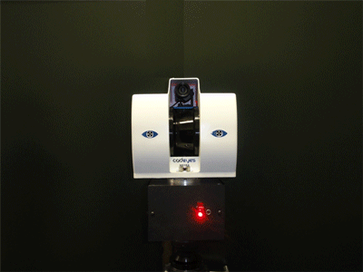
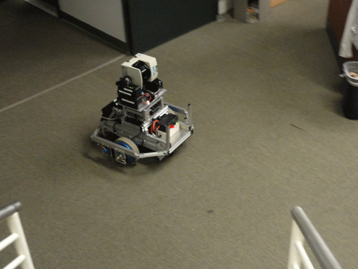

I received my PhD degree under Prof. Kishore Pochiraju's instruction at Stevens Institute of Technology. We built one of the first high precision 3D color laser mapping systems. This systems can be applied to urban surgeying, robotic mapping and autonomous navigation.
Commercialized product for 3D color laser mapping in urban surgeying: CADEyes.

Compact version of developed 3D color laser scanner can also be installed on small robotic platform for indoor mapping.

Indoor and outdoor 3D color mapping data (Point Clouds) can be automatically registered into global map based on the algorithms I designed.
Selected Publications
H. Men, K. Pochiraju, Hue-assisted Automatic Registration of Color Point Clouds, Journal of Computational Design and Engineering Volume 1, Number 4, October 2014, pages 223-232. <PDF>
H. Men, Kishore Pochiraju, Algorithms for 3D Map Registration, Depth Map and 3D Imaging Applications: Algorithms and Technologies, IGI-Global, 2012. <PDF>
H. Men, B. Gebre, K. Pochiraju, Color Point Cloud Registration with 4D ICP Algorithm, IEEE International Conference on Robotics and Automation, Shanghai, China, May 8-13, 2011. <PDF>
H. Men, K. Pochiraju, Hue Assisted Registration of 3D Point Clouds, ASME 2010 International Design Engineering Conferences & Computers and Information in Engineering Conference, Montreal, Quebec, Canada, August 15-18, 2010. <PDF>
B. Gebre, H. Men, K. Pochiraju, Remotely Operated and Autonomous Mapping System (ROAMS), 2009 IEEE International Conference on Technologies for Practical Robot Applications, Woburn, MA, Nov 9-10, 2009. <PDF>
Patents
Kishore Pochiraju, Biruk Gebre, Hao Men, Method and Apparatus for Adaptive Transmission of Sensor Data with Latency Controls, 2010, US 8462681
Kishore Pochiraju, Hao Men, Biruk Gebre, Adaptive Mechanism Control and Scanner Positioning for Improved Three Dimensional Laser Scanning, 2011, US 9322646
Dissertation
Robotic Exploration for Mapping: Systems and Algorithms, 2012.